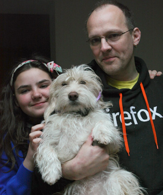

It would be nice if you help us out to give our dog Penny a treat for all the hours her owner invested into this awesome Addon.

Please contributeIf Zombie Keys also enhances your productivity and you would like to support its development, please give your developer a donation!
|
Max would love a treat, too! ;)
|
Any amount is welcome - all donations go through paypal. Do you suggest any amount?US$ donations: we suggest 12$ - but of course smaller or greater amounts are always welcome. Your tip is important to make Zombie Keys even more excellent! You can also add some feature requests here: Bugs + Features. And if your very happy with Zombie Keys, why not leave a good review at Addons at Mozilla.org?. Spread the word! |
Just send me an email, and I give you my address for a cheque or note.
What's the meaning of this free software ??
The reason I am putting a lot of work into Zombie Keys is because I am using it every day, in order to make my daily work easier. I think it also important to share any tool that makes working easier and allow improvement of the tools.
I think the most important aspect on free software is that it is a political statement to avoid the pitfalls of proprietary, monopoly driven software that coined terms such as "Embrace, Extend and Extinguish" and the innovation crippling model of patenting software (for further reading, please see links below). At the moment there is a conflict (I almost wrote war) between the old proprietary model of software and the Free Software Concept, and its you, the users who will really decide where the future will take us. By downloading the Mozilla products and extensions by independant software developers, like Zombie Keys, you are actively helping the cause.
It is also important to note that you can always modify Zombie Keys as its open source and send me improvement suggestions. Or you can use features in the existing software and use them in your own extension, provided you stick to the license (you can not create commercial versions of the extension and you need to attribute / credit the original authors). I have tried to make the code as readable as possible, so that you can check how Zombie Keys achieves its various goals.
The American congress now tries to introduce censorship of the internet. Click here for more information.
The web is changing very massively over the last 2 years. This requires rethinking on how we use this community resource. Community Sites are gaining a big amount of the power and the market share, the "login with facebook" idea is now trying to lock our identities into their systems; building huge silos that lock in our data in order to keep users "within" their systems; and while the web is still an open place and there are lots of "login with facebook" buttons, yet it has become increasingly difficult to move our own data, determine when and where it is used and stored. This is because in this new model, the users become the merchandise and the corporations become the customers. It is because in a "free" world this seems to be the only way to generate some revenue, and believe me that community sites such as facebook are _not_ there to server the users. Like anything else they are there to make money. The question is whether financing by loosing the ownership of one's own data and getting channeled into advertisment slots, is really the way we want to go?
Mozilla is currently working on a new conecept called BrowserId, which aims to allow users to bring their data with them, makes sure the data is encrypted on the server so it cannot be abused or mined without the user's consent. It also should make it easier for the user to move the data across to a different community provider or remove it altogether. This is clearly not in the interest of the community sites themselves if they base their business model around being "the only one", but it is another necessary step for the webn to grow up, and for us users to emancipate ourselves from the providers.
I think that the donation model as such works, although I wish more people of the daily users (there is about 20,000 of you) would take the time to donate some money. At the moment there are about 10 to 15 donations for each released version. So, if you've found Zombie Keys to improve your work or business productivity, please consider donating. We can _really_ use the support. Thanks again in advance.
One thing that I think is a bad idea is to try to use advertisement or constant "nagging" at the users in order to earn some money. I am actively refusing extensions that try to do things like add advertisements within the content area, change browser links (by adding referrers) or redirect users in order to achieve this, there is a very fruitful discussion on the AMO Editors team who constantly review issues that the users bring to our attention around this topic.
However, I also acknowledge that it is an inconvenience and a bit of a leap of faith to make a donation, so I would like to say to all of you who have donated: you rock our world! Thank you both on behalf of the developers the hard working translation teams and on behalf of the other users who haven't thought about giving something just yet.
thanks for reading
yours sincerely, Axel Grude